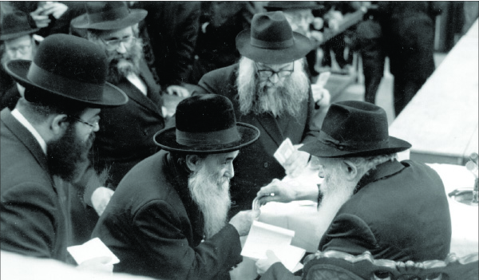

From Brazil to B’nei Brak by Way of Lubavitch
The Lukova-Volborz Rebbe z”l passed away on 4 Sivan 5761/2001. The ties between the Admur and the Chabad Rebbeim began over sixty years ago when the Rebbe Rayatz appointed him as his shliach in Brazil. * He moved, upon the Rebbe’s instructions, to B’nei Brak and disseminated the s’farim of his ancestors. * Over the years, he saw the Rebbe on a number of occasions. * Shai Gefen tells us of the background of the Admur of Lukova-Volborz and about his ties with the Rebbe as well as with the Chabad Chassidim.

Rabbi Tzvi Turnheim was born in Biala. His father was R’ Yair Elimelech, with whom he shares a yahrtzait.
When he was a boy of five, he was orphaned of his father. By the age of sixteen, R’ Tzvi was serving as rosh yeshiva in Losice near Shedlitz where he taught Torah for a number of years. In his youth, he learned in Novardok where he was known for his many self-inflicted mortifications. His friends from that period say that he was caught on more than one occasion sleeping on foul smelling feathers.
When World War II began, he was miraculously saved from the Nazi firestorm when he crossed the border to Brisk in White Russia. That is when he began his numerous wanderings, which only concluded with the end of the war. He lost his entire large family in the war except for a brother. During the war he continued his holy work in teaching Torah and Judaism.
The many miracles he experienced were astonishing as he was saved from Stalin’s decrees when hundreds of thousands of people were sent to Siberia. He was one of the thousands slated to be exiled to Siberia but he jumped from the train and was saved.
He first became acquainted with Chabad during the war years when thousands of Jewish refugees, including himself, poured into Samarkand. He was beloved by the great Lubavitchers of the time who were there, such as R’ Nissan Nemanov and R’ Mendel Futerfas, and he learned Chassidus with them.
Starvation was rampant in Samarkand at the time and the Chassidim distributed food to the needy and sick. The Lukova Rebbe, who was captivated by the charm of the Chabad Chassidim, also helped in the work of spreading Judaism and helping the needy.
A Jewish communist tattled on him as a result of which he was caught and sentenced to a year in Siberia. After serving most of his sentence, he was able to obtain a medical document which stated that he wasn’t fit to remain there and thus, he was saved.
After the war, he returned to his town and birthplace where he had to face the stark reality that his entire family had perished. He married the daughter of R’ Yosef Eliezer Milgrom of Kiev who was a Chabad Chassid and whose sons-in-law were Chassidim, including R’ Yisroel Leibov, the director of Tzach for decades.
After leaving the Soviet Union with the help of Lubavitcher Chassidim, by crossing the Lvov/Lemberg border in 1947, the Admur arrived in Paris where his relationship with Chabad Chassidim continued. He did tremendous work in disseminating Judaism. In Paris, he was invited to many places to speak, to return people’s hearts to their Father in heaven.
It was in Paris that he found out that his brother was alive and living in distant Brazil. He already had a visa for the United States but he thought of going to Brazil instead to see his brother. He sent the Rebbe Rayatz a letter asking him where he should go. After a few weeks, he received a response dated 19 Shvat 5707 in which the Rebbe designated him his shliach to strengthen Torah and Judaism in Rio de Janeiro.
Upon receiving this letter, the Admur changed all his plans and began preparing for the shlichus he had been assigned, a shlichus which continued for decades until the Rebbe blessed him and he made aliya. In Eretz Yisroel he founded the Lukova-Volborz Chassidus center in northern B’nei Brak.
When he arrived in Brazil he found it a spiritual desert. These were the hard days after the war when many Jews were leaving their Jewish roots. Reform groups were also trying to gain a foothold in Brazil.
Upon his arrival, he started a large yeshiva. Before he arrived, even religious Jews sent their children to yeshivos where they learned Torah for only three hours a day. The Admur decided that come what may, only Torah would be studied in his yeshiva. Regarding this decision and the rest of his work in spreading Torah and Judaism, he received a special letter from the Rebbe Rayatz.
Two years after he arrived in Brazil, the Rebbe wrote him a letter on 2 Sivan 5709 acknowledging his desire to found a yeshiva for older boys. The Rebbe told him to do so with the consent of the principal there and blessed him that Hashem should enable him to succeed in establishing talmidim who were G-d fearing and involved in Torah and avoda.
The Admur worked on all things that needed strengthening. Among his famous activities was founding the Agudas Machazikei Ha’Yahadus V’HaAchava which produced announcements and letters that encouraged Jews to observe Shabbos and close their stores for Shabbos.
R’ Turnheim used many languages in order to reach all the Jews who had come from various countries. Announcements said things like:
Dear Jews,
Fulfill the mitzva of “remember the Shabbos day to sanctify it.” This would be the best memorial for your holy fathers … the greatest honor will be when you follow in the ways of your holy fathers who kept Shabbos with mesirus nefesh in all the towns in which you lived. With bitachon, believe in G-d to keep Shabbos despite the upheavals and oppressions that were your lot. Continue the chain of Shabbos for generations …
With his Ahavas Yisroel and pleasant way of wording it, he was able to accomplish a great deal. He strengthened the Jewish organizations and opened new institutions. He gave shiurim wherever Jews lived.
When the terrible news of the passing of the Rebbe Rayatz came, he arranged a public event for the Shloshim in the large Adas Yisroel shul. Thousands of Jews came to express their appreciation to the Rebbe, since it was in his merit that so much was being done to strengthen religious life in Brazil.
The Admur continued his relationship with Chabad by corresponding with the new Rebbe. He had his first yechidus when he went to the United States for the first time for the wedding of his oldest son, R’ Boruch Isaac, in 5731. The yechidus took nearly an hour, with the Rebbe speaking to him about personal and communal matters in Brazil. The Admur asked the Rebbe for a bracha that he succeed in raising all his children to Torah and yiras Shamayim and marry them off. The Rebbe showered him with brachos.
The Rebbe’s brachos were fulfilled with two of his sons serving as shluchim and the rest as rabbanim. The Admur brought the Rebbe his grandfather’s work called Avodas Yisachar. The Rebbe examined the volume and then asked him to print it even though he had brought along other recently published s’farim written by his ancestors.
In the introduction to Avodas Yisachar, the Admur says that he saw open ruach ha’kodesh from the Rebbe. He had been in Eretz Yisroel and had visited an old relative in Yerushalayim, R’ Berish Turnheim. The latter asked him to print the Avodas Yisachar. “I didn’t tell the Rebbe about this, but the Rebbe knew what had taken place in Eretz Yisroel.
“Unfortunately, the book wasn’t printed. At the second yechidus, when I went to the Rebbe over a year later, upon the occasion of my son, R’ Yosef Chaim Eliezer’s wedding (he is presently a shliach in Connecticut), the first question the Rebbe asked me was, ‘What’s with the s’farim?’ I was embarrassed and didn’t know what to say. I finally said that unfortunately, I had not printed them. The Rebbe asked me again to print Avodas Yisachar and took $100 out of his pocket and gave it as his contribution to the printing costs. I didn’t want to take the money and said, “One should give money to the Rebbe, not take.” The Rebbe smiled and said, “You take money from other Jews, and am I not a Jew?”
After that yechidus, the Admur made great efforts to publish the volume. His son Yair Elimelech was involved in getting it to print and after a long while, the Rebbe received a new copy which gave him much nachas.
The Admur of Lukova dedicated the seifer to the Rebbe. This is the same dedication that has been written in all the editions printed since then: Since the Lubavitcher Rebbe importuned me several times to bring merit to the many by publishing this tome, and as per his directive which has strengthened me since, along with the fact that he gave from his own pocket a nice sum to enable the printing of the works of the righteous, I hereby am fulfilling his holy request with love and awe. May Hashem extend his days and may he merit to lead his flock, the congregation of Chassidim, and all our Jewish people towards Moshiach Tzidkeinu, speedily in our days, amen sela.”
The Admur printed the book in eight editions with over 10,000 copies. Because of the Rebbe’s request, the rest of the s’farim of the Admurim of Lukova and Volborz were also published such as his grandfather’s work, T’hillim – Divrei Ha’Am, Ohel Yisachar, the life story and divrei Torah from the Admur of Volborz, a Siddur with a collection of teachings of the Admurim and more.
In a yechidus that took place afterward, he brought the volume to the Rebbe and could see how pleased the Rebbe was by it. The Rebbe asked him not to leave the place where he lived and to continue his shlichus and gave him numerous brachos. The Admur once said that his success in the education of his children was something he owed the Rebbe, who was a constant support to him and who begged him to renew the chain of his forefathers who had been killed in the war.
***
In 5745, he moved to Eretz Yisroel with the Rebbe’s blessing and consent. His goal was to make a memorial to his ancestors.
In 5748 he opened his beis midrash in the northern part of B’nei Brak, a place far from Jewish life. The purpose was to spread Judaism amongst not-yet religious Jews. He opened a kollel called Dibbuk Chaveirim, started a network of after-school yeshivos for youth, and an institute dedicated to publishing his ancestors’ s’farim.
For Yud Shvat 5750, which marked forty years since the Rebbe took over the nesius, the Admur went to the Rebbe. He attended the farbrengen which took place on Shabbos. The next day, he went by the Rebbe for dollars and being overwrought he burst into tears. He attributed all his success to the Rebbe. He asked for a special bracha for his work in B’nei Brak, because of the harassment from an irreligious neighbor.
The Rebbe gave him brachos including that he succeed in spreading Torah and Chassidus in B’nei Brak. The Rebbe’s bracha was fulfilled when a week before the Admur’s passing he realized his dream and bought the building adjacent to his beis midrash. There had been nonstop fighting and scheming about it on the part of the neighbors.
***
The Admur of Lukova always participated in Chabad gatherings in Eretz Yisroel. Despite his advanced age (he died at 87) he attended every event and disregarded his personal honor. The last public event he attended was the Lag B’Omer parade of 5761/2001. He blessed the thousands of children with Birkas Kohanim as he did at every kinus he attended.
The Admur also attended the Moshiach and Geula events and took an active part in the fight for Shleimus Ha’Aretz. He regularly participated in the protest activities of the Pikuach Nefesh organization.
When former PM Shimon Peres was about to give away Chevron on the eve of the elections, the Admur gathered with other Admurim and cried before the prime minister not to give Chevron to the Arabs. As a result, the withdrawal was postponed until after the elections. (It was then given away when someone on the Right won the election). Peres told those close to him that it was the words of the old rabbi that touched his heart and made him decide to postpone the withdrawal.
The Admur was involved in inyanei Moshiach and Geula and felt it important to raise awareness of this among all kinds of people. He would say that today Moshiach’s coming is not a “luxury” as people may once have thought; it’s what we need when there is no other solution on the horizon. Wherever he went, he constantly spoke about the greatness of the Rebbe and he was mekarev even those who were distant from Chabad to the Rebbe.
He was known to make do with little. He fasted a lot on behalf of Klal Yisroel. He was humble and always smiled to those around him, honoring others with his graciousness.
***
On Shabbos Parshas BaMidbar, 4 Sivan, he planned on having a kiddush in his beis midrash to mark his father’s yahrtzait. He went to the mikva early in the morning. He then went home and lay down to rest for a few minutes at which time he passed away. This was a great loss to the Chassidic world at large.
His son, R’ Shmuel Turnheim was appointed the rav of the Lukova-Volborz beis midrash.
Beis Moshiach (staff). "From Brazil to B’nei Brak by Way of Lubavitch." Beis Moshiach, no. 879 (May 9, 2013).